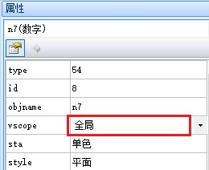
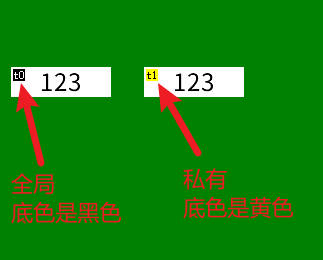
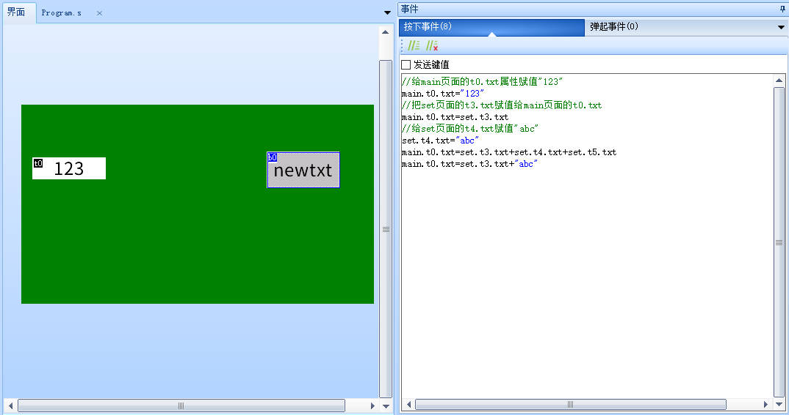
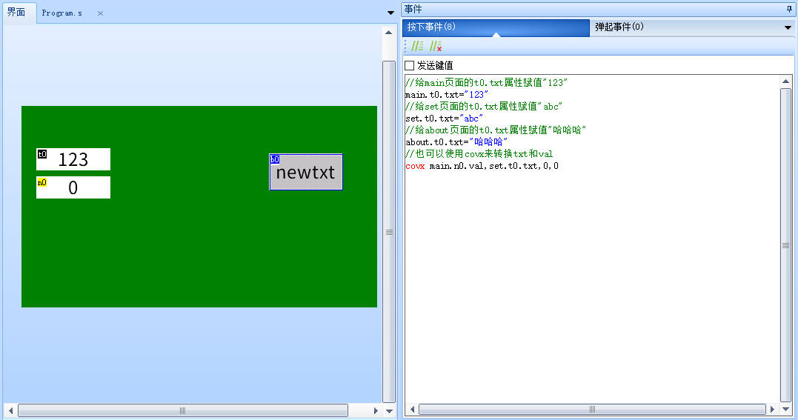
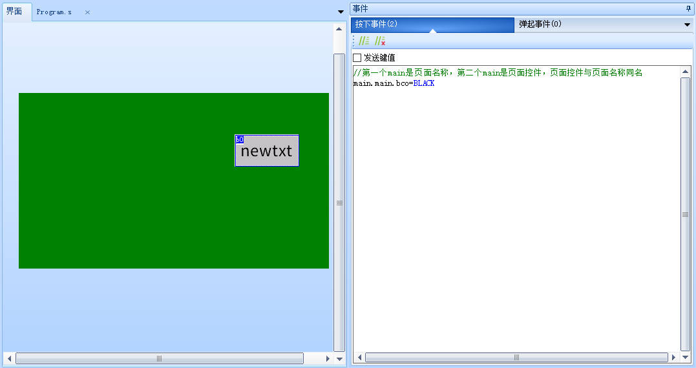
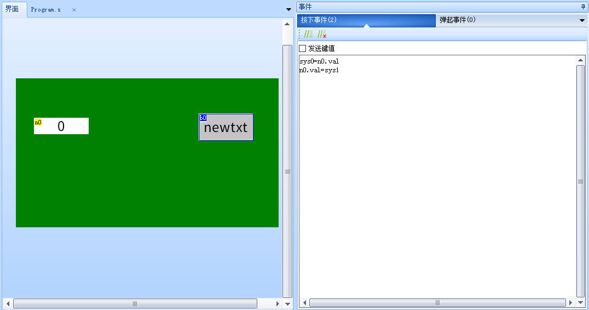
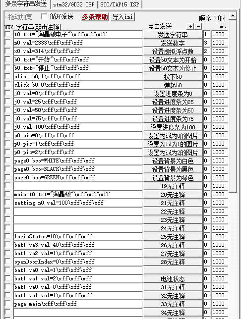

跨页面赋值，全局变量操作
全局变量-常规使用
多数情况下，我们都是在操作当面页面的控件属性，如果需要操作其他页面的控件属性需要提前将对应的控件设置为全局

修改了vscope属性后，控件的名称会由黄色变为黑色

请按如下书写方式:
[页面].[控件].[属性]=XXX
//给page0页面的n0.val属性赋值123
page0.n0.val=123
//给page1页面的n0.val属性赋值456
page1.n0.val=456
//给main页面的t0.txt属性赋值"abc"
main.t0.txt="abc"
//给main页面的t0.txt属性赋值"123"
main.t0.txt="123"
//把set页面的t3.txt赋值给main页面的t0.txt
main.t0.txt=set.t3.txt
//给set页面的t4.txt赋值"abc"
set.t4.txt="abc"
//将set的页面t3.txt、t4.txt、t5.txt的文本内容拼接后赋值给main页面的t0.txt
main.t0.txt=set.t3.txt+set.t4.txt+set.t5.txt
//将set的页面t3.txt、拼接字符串"abc"后赋值给main页面的t0.txt
main.t0.txt=set.t3.txt+"abc"

如果不同页面有名称相同的控件需要赋值不同的数据，可以将他们设置为全局
//给main页面的t0.txt属性赋值"123"
main.t0.txt="123"
//给set页面的t0.txt属性赋值"abc"
set.t0.txt="abc"
//给about页面的t0.txt属性赋值"哈哈哈"
about.t0.txt="哈哈哈"
//也可以使用covx来转换txt和val
covx main.n0.val,set.t0.txt,0,0

如果需要跨页面修改页面的背景颜色，需要将页面控件设置为全局
//第一个main是页面名称，第二个main是页面控件，页面控件与页面名称同名
main.main.bco=BLACK

注意
1.跨页面操作控件属性的时候，不管是读取还是赋值，被操作控件的vscope属性必须设置为全局（默认是私有），否则操作会失败。
2.click vis tsw指令无法跨页面触发控件、定时器控件只能在当前页面运行、曲线波形控件只能在当前页面添加数据点。
在program.s中定义的变量也是全局变量，且只能是数字类型的变量，可以在任意页面进行使用
sys0=n0.val
n0.val=sys1

全局变量-特殊控件
1、定时器控件
定时器控件虽然可以设置为全局，但是定时器无法跨页面运行，定时器只能在定时器所在的页面运行，一旦切换页面，定时器就会停止运行
2、触摸捕捉控件
触摸捕捉控件设置为全局是无意义的
3、数据记录控件
数据记录控件只能是全局的
4、文件流控件
文件流控件只能是私有的
不同页面的相同名称的控件是什么关系
比如page0页面的n0控件和page1页面的n0控件有什么关系
这是两个独立的控件
打个比方，某户人姓张，隔壁老王姓王，老张的儿子叫小明，老王的儿子也叫小明
在老张家时，别人只喊“小明”两个字，那就是在喊“张.小明”
在老王家时，别人只喊“小明”两个字，那就是在喊“王.小明”
在老张家想喊老王家的小明，那就得加上具体的姓氏，就是“王.小明”
同理，page0.n0就是在说明是page0页面的n0，page1.n0就是在说明是page1页面的n0
全局变量-c语言示例
单片机通过串口给全局变量赋值
给文本控件赋值时如果显示的文本不全，请检查控件的txt_maxl属性
printf("main.t0.txt=\"abc\"\xff\xff\xff"); //给main页面的t0文本控件赋值
printf("page0.t2.txt=\"%d\"\xff\xff\xff",a); //给page0页面的t2文本控件赋值
printf("set.t3.txt=\"abc\r\n123\"\xff\xff\xff"); //给set页面的t3文本控件赋值
printf("set.n0.val=12345\xff\xff\xff"); //给set页面的n0数字控件赋值
printf("sys0=1\xff\xff\xff"); //给全局变量sys0赋值，sys0定义在program.s中
printf("dim=100\xff\xff\xff"); //设置亮度，dim是系统变量
printf("volume=100\xff\xff\xff"); //设置音量，volume是系统变量
全局变量-sscom串口工具发送示例
main.t0.txt="abc"\xff\xff\xff
page0.t2.txt="30"\xff\xff\xff
set.t3.txt="abc\\r123"\xff\xff\xff
set.n0.val=12345\xff\xff\xff
sys0=1\xff\xff\xff
dim=100\xff\xff\xff
volume=100\xff\xff\xff

全局变量-样例工程下载
演示工程下载链接：